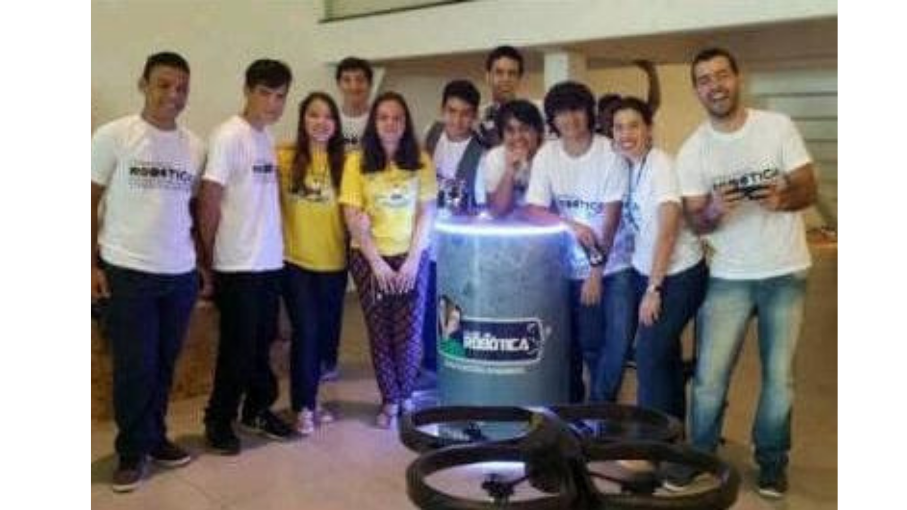
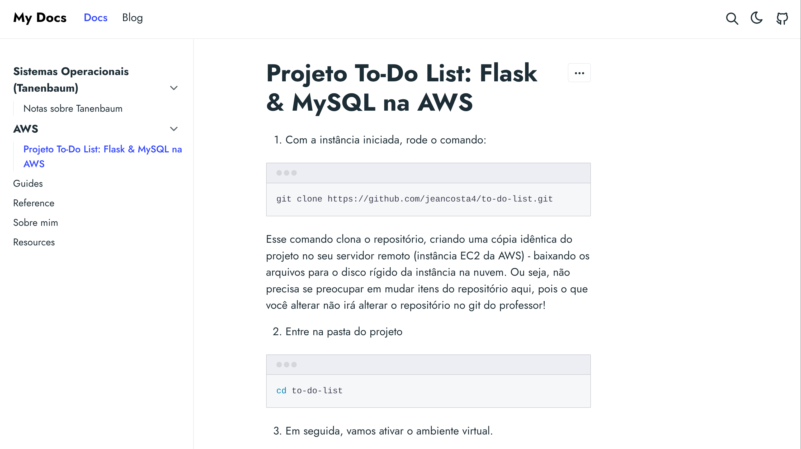

Pamela Iwabuchi.
Graduanda em Desenvolvimento de Software Multiplataforma pela FATEC - SJC e Farmacêutica pela Universidade do Norte - Manaus AM. Estive envolvida ao longo dos anos em projetos de pesquisa e iniciação científica como bolsista da FAPEAM no Instituto Nacional de Pesquisas da Amazônia (INPA). Desde outubro de 2026, atuo como bolsista de pesquisa no grupo Queimadas do Instituto Nacional de Pesquisas Espaciais (INPE). Atualmente em transição de carreira, tenho interesse em análise de dados e desenvolvimento de sistemas, aprendendo constantemente sobre desenvolvimento web, banco de dados, Python e lógica de programação.
Ao longo dos anos venho aprimorando a habilidade de resolução de problemas, comunicação, trabalho em equipe e raciocínio lógico. Tenho pensamento crítico e procuro estar sempre aprendendo e entendendo como as coisas funcionam. Conheça mais sobre mim e meus projetos aqui e não deixe de navegar pelo meu iwabuchi-labs!
EXPERIÊNCIA PROFISSIONAL
Bolsista de Pesquisa — INPE (Instituto Nacional de Pesquisas Espaciais) | São José dos Campos - SP | Out/2026 - atual
- Atuação no grupo Queimadas, com foco em validação e verificação de software.
- Desenvolvimento de testes automatizados em Python com pytest.
- Trabalho com banco de dados PostgreSQL e dados geoespaciais no QGIS.
Iniciação Científica — INPA (Instituto Nacional de Pesquisas da Amazônia) | Manaus - AM | Bolsista PIBIC/FAPEAM | 2 anos
- Pesquisas para o tratamento da Leishmaniose Tegumentar utilizando plantas medicinais, com publicação de 3 artigos científicos.
Gestão de E-commerce e ERP — Empreendedora | Manaus - AM | 2020 - 2025
- Administração completa de loja virtual: cadastro de produtos, controle de estoque e atendimento ao cliente em múltiplos canais.
- Implementação e gestão de Tiny ERP integrado à Nuvemshop, reduzindo erros de estoque e automatizando a emissão de notas fiscais.
- Relacionamento direto com clientes, desenvolvendo resolução de problemas e comunicação.
Projetos
GesTec — Sistema de Gestão de Ordens de Serviço (SGOS)
Sistema desenvolvido pela equipe GesTec para a empresa parceira ALTAVE, com o objetivo de centralizar, estruturar e rastrear o fluxo de solicitações operacionais e projetos de implantação: cadastro de clientes e projetos, ordens de serviço por departamento, controle de status, prazos de SLA, notificações e logs de auditoria.
Projeto desenvolvido com Scrum em 3 sprints (set-nov/2026), utilizando React, TypeScript, Node.js/Express, PostgreSQL (Supabase) com Prisma, JWT e Swagger.
Atuei como desenvolvedora no registro de horas nas ordens de serviço: criação da tabela de lançamentos de horas, registro de horas na O.S. com exigência de horas na troca de status e listagem dos lançamentos com total. Também adaptei o banco do sistema para MySQL na disciplina de Banco de Dados Relacional, com modelagem, functions, procedures, triggers e views.
Projeto Radar Cidadão
Os dados sobre a atuação dos Deputados Federais são públicos, mas difíceis de interpretar. O Radar Cidadão transforma esses dados em informações simples e comparáveis, para que o cidadão possa decidir seu voto com base em dados reais.
Minha atuação, do dado bruto ao indicador:
- Coleta: extração de dados da API pública da Câmara dos Deputados.
- Modelagem: modelagem conceitual e lógica do banco de dados MySQL (tabelas, chaves primárias/estrangeiras e relacionamentos), implantado em instância AWS.
- Carga: scripts SQL para população e carga inicial dos dados.
- Análise: criação do Índice Geral de Desempenho dos Deputados, fórmula que avalia o desempenho de cada parlamentar e se tornou o principal diferencial do projeto.
Projeto do 1º semestre, desenvolvido com Scrum em equipe de 9 pessoas.
Universidade UniTeV
Aplicação desenvolvida para a disciplina de Desenvolvimento Web, utilizando MySQL hospedado no Railway para a página de contato e Docker para padronização do ambiente.
O site recebe dados dos alunos que desejam deixar sugestões ou receber contato pela página de formulário.
Clube de Robótica FUCAPI (Fundação Centro de Análise, Pesquisa e Inovação Tecnológica) — 2015
Torneio de Robótica FIRST LEGO® LEAGUE - Trash Trek. Atuei na equipe de desenvolvimento de uma Reverse Vending Machine (RVM), com foco no incentivo à reciclagem. O protótipo reconhecia a entrada e a quantidade de latinhas e retornava créditos para o usuário. Nossa equipe também desenvolveu robôs para o torneio, entre eles um robô que monta o cubo mágico em menos de 1 minuto!
Os projetos foram apresentados na XII Feira Tecnológica da FUCAPI (2015).
A Rede Globo visitou nosso projeto e nos entrevistou para contarmos mais detalhes:

Certificados
Python Essentials 1 - CISCO
Python: Formação Básica - LinkedIn
Introduction to Cybersecurity - CISCO
Fundamentos para Desenvolvimento de Software - Microsoft
Fundamentos para uma carreira em Cibersegurança - Microsoft
Noções básicas do Microsoft Azure AI: Introdução às Workloads e Aprendizado de máquina no Azure
Certificado EF SET Inglês 69/100 (C1 Proficiência Eficaz)
AWS Academy Cloud Foundations - Em Andamento
English for International Interviews - ArInter
IA Agêntica na Prática: RAG, Prompting e Desenvolvimento de Agentes - FATEC
Desenvolvimento Web Responsivo - HTML, CSS e acessibilidade (freeCodeCamp) - Em Andamento
Linguagens e Tecnologias
Artigos Publicados
iwabuchi-labs
O iwabuchi-labs é o lugar onde centralizo meu conhecimento e documento testes e tutoriais/atividades práticas derivadas dos meus estudos.
Meu objetivo é poder ajudar calouros que irão iniciar os estudos nos próximos semestres e treinar minha habilidade de escrita e ensino, além de ter uma espécie de biblioteca particular, onde posso sempre revisitar o que já aprendi e adicionar mais conhecimento conforme aprendo e testo.
Clique abaixo para acessar o iwabuchi-labs:
